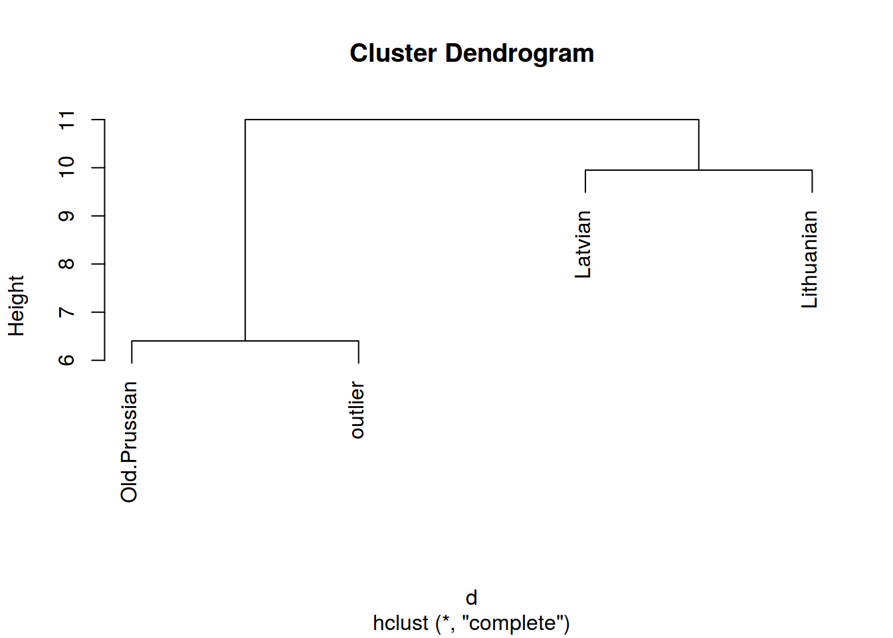
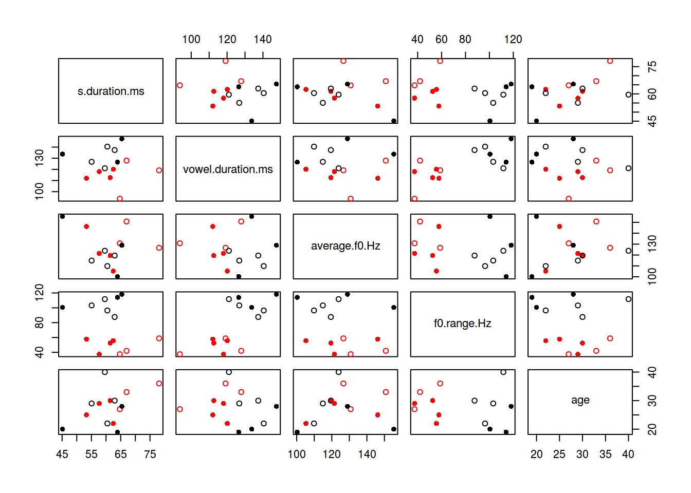
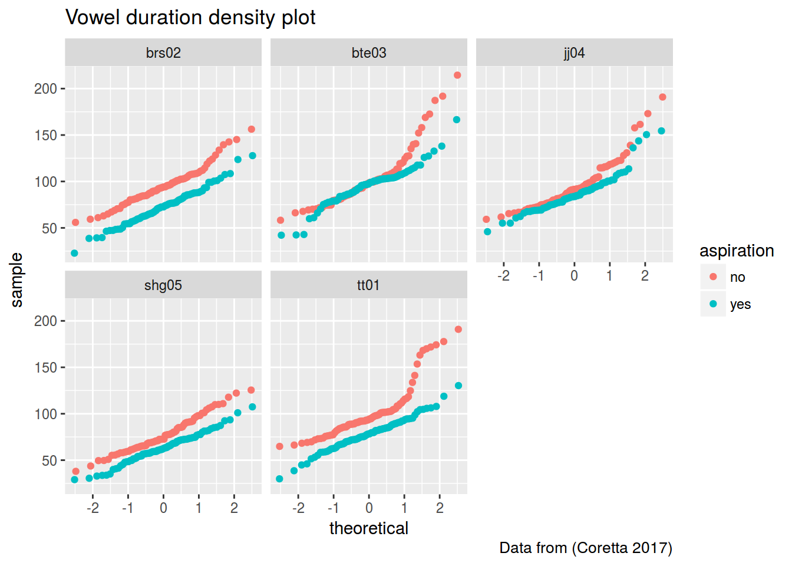

library(tidyverse)df <- read.csv("http://goo.gl/nLkHLq")
d <- dist(t(df[,3:6]))
set.seed(42)
kmeans(d, 3)## K-means clustering with 3 clusters of sizes 1, 2, 1
##
## Cluster means:
## Old.Prussian Latvian Lithuanian outlier
## 1 6.403124 10.295630 11.000000 0.000000
## 2 10.318490 4.974937 4.974937 10.647815
## 3 0.000000 10.148892 10.488088 6.403124
##
## Clustering vector:
## Old.Prussian Latvian Lithuanian outlier
## 3 2 2 1
##
## Within cluster sum of squares by cluster:
## [1] 0.0000 99.3056 0.0000
## (between_SS / total_SS = 67.7 %)
##
## Available components:
##
## [1] "cluster" "centers" "totss" "withinss"
## [5] "tot.withinss" "betweenss" "size" "iter"
## [9] "ifault"hc <- hclust(d)
plot(hc)
df <- read.csv("http://goo.gl/Zjr9aF")
row.names(df) <- df$speaker
d <- dist((df[,-c(6:9, 1)]))
min(d)## [1] 15.79903set.seed(42)
km <- kmeans(d, 2)
cbind.data.frame(cluster = km$cluster, orientation = df$orientation) %>%
count(cluster, orientation)## Source: local data frame [4 x 3]
## Groups: cluster [?]
##
## # A tibble: 4 x 3
## cluster orientation n
## <int> <fctr> <int>
## 1 1 hetero 3
## 2 1 homo 4
## 3 2 hetero 4
## 4 2 homo 3plot(df[,-c(6:9, 1)], col = km$cluster, pch = c(16, 1)[df$orientation])
df %>%
mutate(cluster = km$cluster) %>%
group_by(cluster) %>%
summarise(mean = mean(perceived.as.homo.percent),
sd = sd(perceived.as.homo.percent))## # A tibble: 2 x 3
## cluster mean sd
## <int> <dbl> <dbl>
## 1 1 0.6114286 0.2484236
## 2 2 0.4685714 0.2440921hc <- hclust(d)
plot(hc)
library(stringdist)
stringdist("Antidisestablishmentarianism", "computer", method = "lv")## [1] 25stringdist("Antidisestablishmentarianism", "computer", method = "jaccard")## [1] 0.7647059